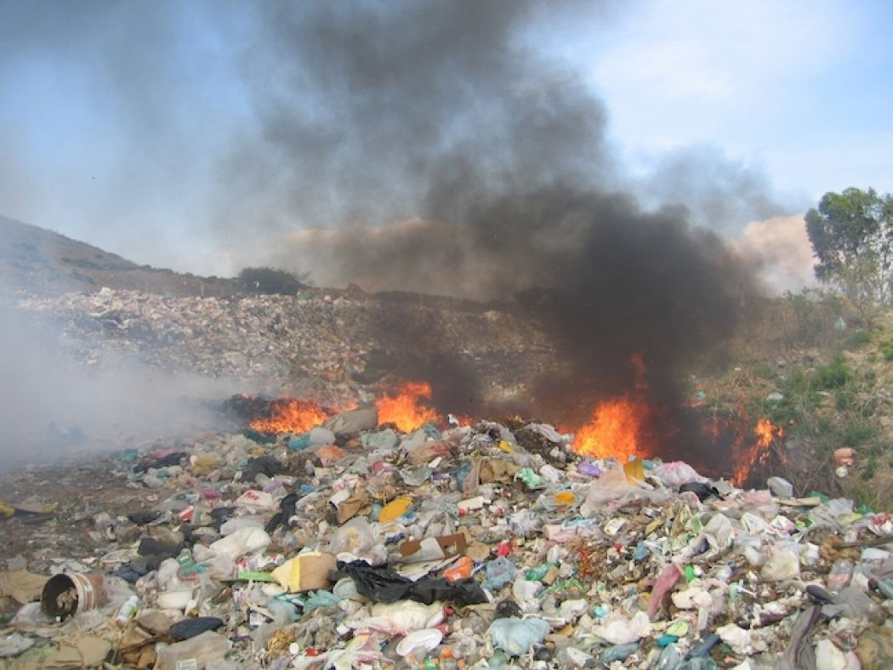
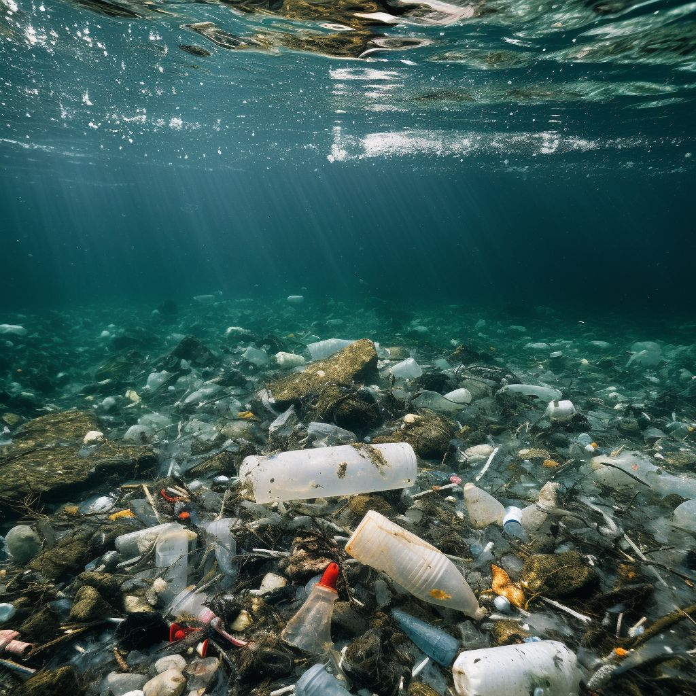
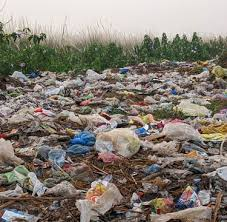
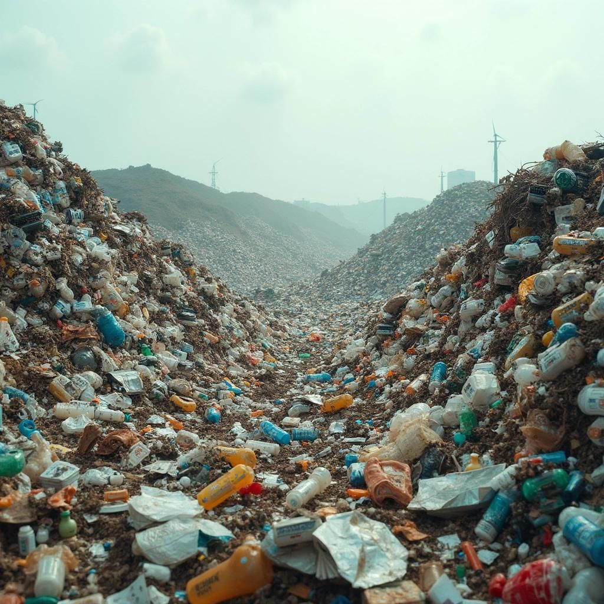

Air pollution can be defined as an alteration of air quality that can be characterized by measurements of chemical, biological or physical pollutants in the air. Therefore, air pollution means the undesirable presence of impurities or the abnormal rise in the proportion of some constituents of the atmosphere.Air pollution is caused by the presence in the atmosphere of toxic substances, mainly produced by human activities, even though sometimes it can result from natural phenomena such as volcanic eruptions, dust storms and wildfires, also depleting the air quality.It is impossible to describe the whole extent of potential and actual damage caused by all forms of air pollution.
Water pollution can be defined as the contamination of a stream, river, lake, ocean or any other stretch of water, depleting water quality and making it toxic for the environment and humans.What are the sources of water pollution? Unsurprisingly, human activity is primarily responsible for water pollution, even if natural phenomenon such as landslides and floods can also contribute to degrade the water quality.Water pollution truly harms biodiversity and aquatic ecosystems. The toxic chemicals can change the color of water and increase the amount of minerals - also known as eutrophication - which has a bad impact on life in water. Thermal pollution, defined by a rise in the temperature of water bodies, contributes to global warming and causes serious hazard to water organisms.


Land pollution refers to all forms of pollution affecting any type of soil: agricultural, forestry, urban, etc. Soil pollution is a disruptive element for many biological resources and ecosystems.A soil is polluted when it contains an abnormal concentration of chemical compounds potentially dangerous to human health, plants or animals.Soil pollution can harm public health and animals, as well as the quality of groundwater and surface water. Its effects are of several kinds, namely deferred or immediate, but also direct or indirect.
Plastic pollution is caused by the accumulation of plastic waste in the environment. It can be categorized in primary plastics, such as cigarette butts and bottle caps, or secondary plastics, resulting from the degradation of the primary ones. It can also be defined by its size, from microplastics - small particles (less than 5 mm) of plastic dispersed in the environment - to macroplastics.Since its commercial development in the 1950s, plastic has been a real success. Its global production is growing exponentially. Its success comes from its remarkable qualities: ease of shaping, low cost, mechanical resistance, etc. Being the ideal material for packaging, plastic is basically everywhere.
